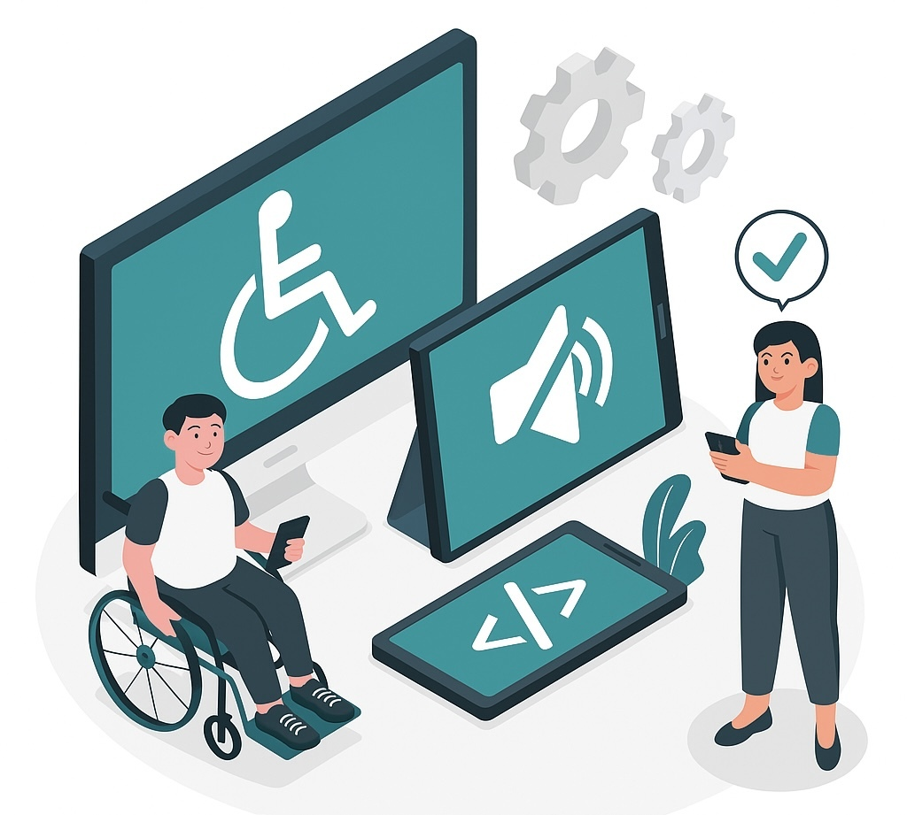

Welcome to our Accessibility quiz!
Hello there! Thank you for exploring the important topic of web accessibility. Please feel welcome to take the quiz below to assess your understanding of key accessibility principles in web development. Accessibility is fundamental to creating inclusive digital experiences, and we encourage you to share this resource with others who may benefit from learning more.
This quiz has been developed with a strong focus on web accessibility principles to ensure a positive experience for all users, including those with disabilities.
Continue

Accessibility Quiz
1. What is accessibility?
This questions is about the definition of accessibility
Accessibility refers to the design of products, devices, services and environments for people who experience disabilities, including web developemnt.
Accessibility is primarily focused on optimizing websites for search engines to improve their ranking.
Accessibility mainly concerns the visual design of a website, ensuring it is aesthetically pleasing and easy to navigate for all users.
1. What is Semantic HTML as it relates to accessible web design?
This question asks about Semantic HTML as it relates to accessible web design.
Semantic HTML refers to writing HTML code that is shorter and uses fewer lines, making it easier to load quickly.
It is the practise of using HTML elements that clearly describe their meaning and purpose to both browsers and developers *
Semantic HTML is a coding style that focuses on using the latest HTML5 features, regardless of their meaning or purpose, to create modern-looking websites.
3. What is the primary purpose of the "Skip to Content" link in terms of web accessibility?
This question asks about primary purpose of the "Skip to Content" link in terms of web accessibility.
To provide a link back to the homepage. .
To enable keyboard users to bypass repetitive navigation and jump directly to the main content. ***
To improve the website's search engine optimization.
4. What does EAA stand for?
This question asks what does EAA stands for.
European Adaptation to Acessibility. .
European Accessibility Act**.
European Access to Adaptiveness.
5. Who in Europe is not necessarily affected by the EEA’s requirements and obligations?
This question asks who in Europe is not necessarily affected by the EEA’s requirements and obligations.
Enterprises that work in Europe but have their headquarters outside of Europe. .
Infants, children under 13 years old, students, unemployed and adults over 65 years old.
Enterprises which employ fewer than 10 persons and have an annual turnover or balance sheet total not exceeding €2 million.
6. What is the purpose of ARIA (Accessible Rich Internet Applications) attributes?
This question asks about the purpose of ARIA (Accessible Rich Internet Applications) attributes.
To provide additional styling options for HTML elements.
To offer semantic information for assistive technologies.
To manage dynamic content without JavaScript.
7. Which ARIA attribute is commonly used to provide a text alternative for non-text content like images when the image is informative?
This question asks which ARIA attribute is commonly used to provide a text alternative for non-text content like images when the image is informative.
aria-label
aria-describedby **
alt
8. Why is it important to ensure that all interactive elements on a webpage are navigable using the keyboard?
This question asks why is it important to ensure that all interactive elements on a webpage are navigable using the keyboard?
To improve the website's visual appeal.
To make the website accessible to users who cannot use a mouse or other pointing devices.
To ensure compliance with search engine guidelines.
9. According to Funkify - Disability Simulator - how many people are affected by blurry vision?
This question asks how many people are affected by blurry vision according to Funkify - Disability Simulator.
About 4% of population has vision impairment, while about 60% wear glasses or contact lenses.
1% of population.
70% of population.